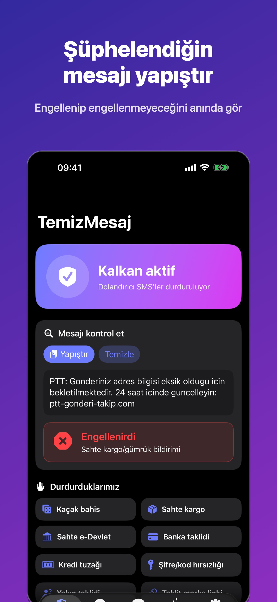
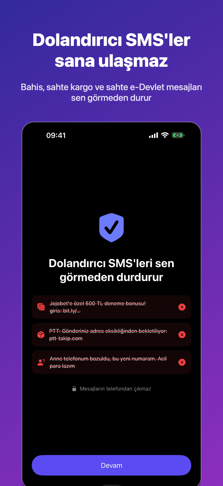
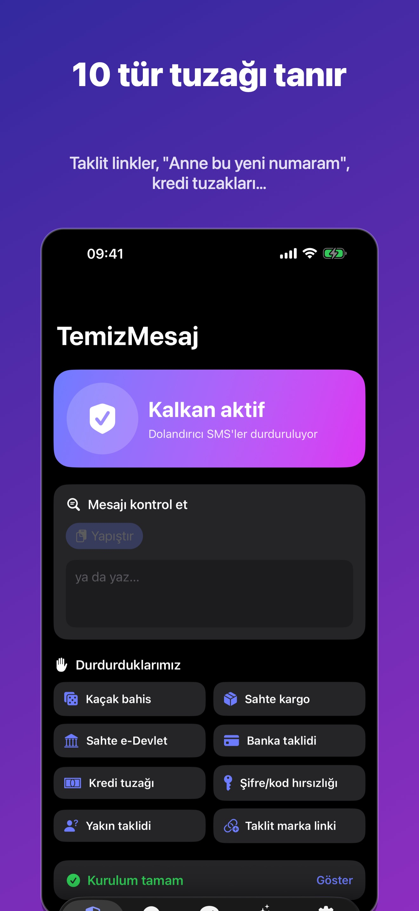
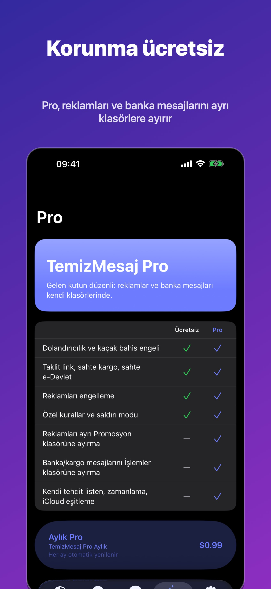
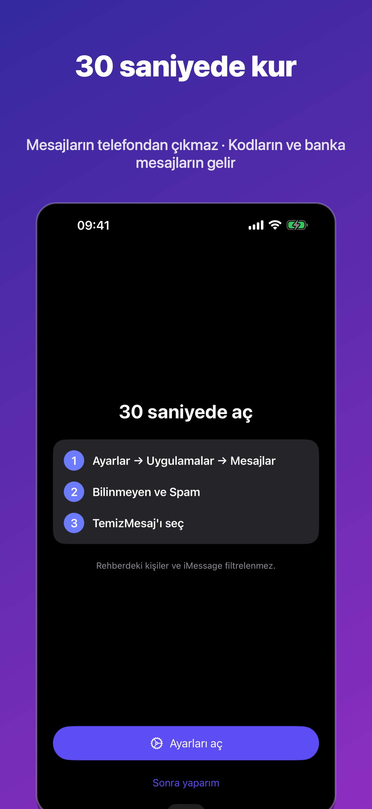

iPhone için ücretsiz SMS kalkanı
Bahis ve dolandırıcı SMS'ler sana ulaşmasın.
Deneme bonusu, sahte kargo, sahte e-Devlet, “Anne bu yeni numaram”… TemizMesaj hepsini sen görmeden İstenmeyen klasörüne gönderir. Mesajların telefondan çıkmaz.

Neleri durdurur?
- Kaçak bahis ve casino: deneme bonusu, freespin, “güncel giriş adresi”
- Sahte kargo: “Adresiniz eksik, gönderiniz bekletiliyor”
- Sahte e-Devlet: icra, HGS, trafik cezası, vergi iadesi
- Banka taklidi: “Kartınızdan para çekildi, iptal için tıklayın”
- Taklit marka linkleri: netflix-destek, apple-id-dogrula, enerjisa-odeme
- Hesap kapatma tehdidi: “Hesabınız 24 saat içinde silinecek”
- Sahte ödül ve ikramiye: emekli promosyonu, USDT yatırıldı
- Yakın taklidi: “Anne telefonum bozuldu, bu yeni numaram”
- Kredi ve kolay para tuzakları: sicil affı, evden kazanç
- Gizlenmiş kelimeler: b4his, c@sino, b.a.h.i.s
Banka hareketleri, kargo bildirimleri ve doğrulama kodları engellenmez. Rehberindeki kişiler ve iMessage hiçbir zaman filtrelenmez.




iPhone'da bahis SMS'leri nasıl engellenir?
- App Store'dan TemizMesaj'ı indir.
- Ayarlar → Uygulamalar → Mesajlar bölümünü aç.
- Bilinmeyen ve Spam bölümüne gir.
- SMS Filtreleme altında TemizMesaj'ı seç. Hepsi bu.
Ücretsiz
Dolandırıcılık ve kaçak bahis engeli hiçbir ücret istemez. İstersen reklam SMS'lerini de tek dokunuşla engelle.
Cihazında
Mesajların telefondan çıkmaz. İnceleme iPhone'unda yapılır, hiçbir sunucuya gönderilmez.
Her gün güncel
Yeni bahis siteleri ve dolandırıcılık türleri kural listesine eklenir, uygulama güncellemesi beklemeden telefonuna gelir.
Sık sorulanlar
iPhone'da bahis SMS'leri nasıl engellenir?
TemizMesaj'ı indirip Ayarlar → Uygulamalar → Mesajlar → Bilinmeyen ve Spam bölümünden SMS filtresi olarak seçmen yeterli. Rehberinde olmayan numaralardan gelen bahis ve dolandırıcılık SMS'leri otomatik olarak İstenmeyen klasörüne gider.
TemizMesaj ücretsiz mi?
Evet. Dolandırıcılık, kaçak bahis ve reklam SMS engelleme ücretsizdir. Pro sürüm reklamları ve banka mesajlarını silmek yerine ayrı Promosyon ve İşlemler klasörlerine ayırır.
Mesajlarımı okuyor veya bir yere gönderiyor mu?
Hayır. İnceleme tamamen iPhone üzerinde yapılır; mesaj içeriği hiçbir sunucuya gönderilmez. Uygulama eski mesajları okuyamaz ve hiçbir mesajı silmez.
Banka şifreleri ve doğrulama kodları engellenir mi?
Hayır. Doğrulama kodları, banka hareketleri, kargo ve sipariş bildirimleri tanınır ve gelmeye devam eder.
Sahte kargo ve sahte e-Devlet SMS'leri nasıl anlaşılır?
Aciliyet yaratırlar (adres eksik, ceza, icra, “24 saat içinde”) ve resmi olmayan bir link içerirler (ör. ptt-gonderi-takip.com). Resmi kurumlar .gov.tr, bankalar ve kargo şirketleri genellikle .com.tr uzantısı kullanır. TemizMesaj bu kalıpları otomatik tanır.
Yeni bahis siteleri de engellenir mi?
Evet. Kural listesi bu sitede yayınlanır; uygulama günde en fazla iki kez günceller.
Hâlâ spam geliyorsa ne yapmalıyım?
Mesajlar uygulamasında mesajı “Gereksiz olarak bildir” dersen gönderici bu cihazda engellenir. Sürekli spam geliyorsa uygulamadaki “Saldırı modu” 1 saat boyunca tüm bilinmeyen göndericileri susturur.